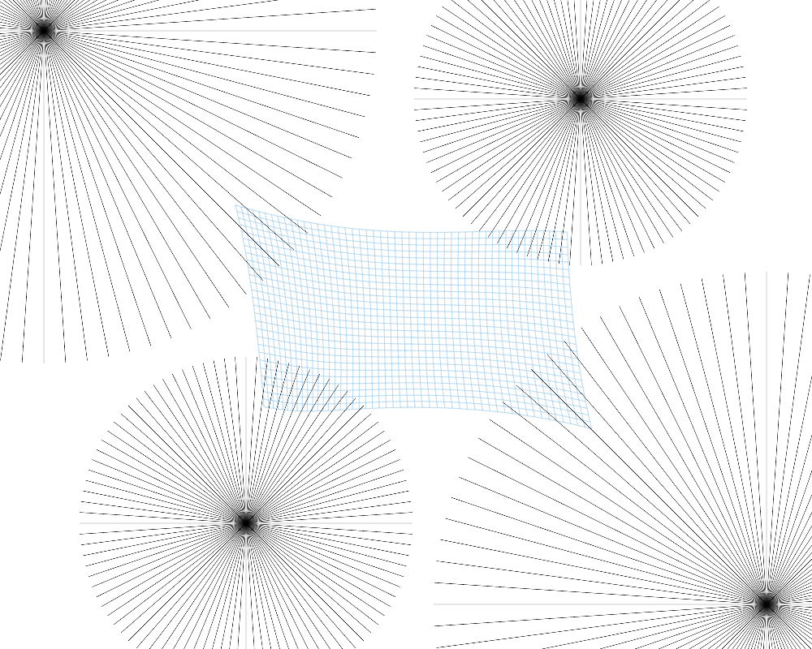
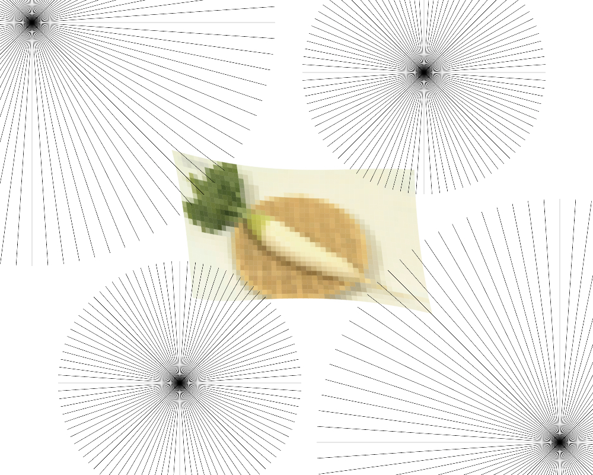
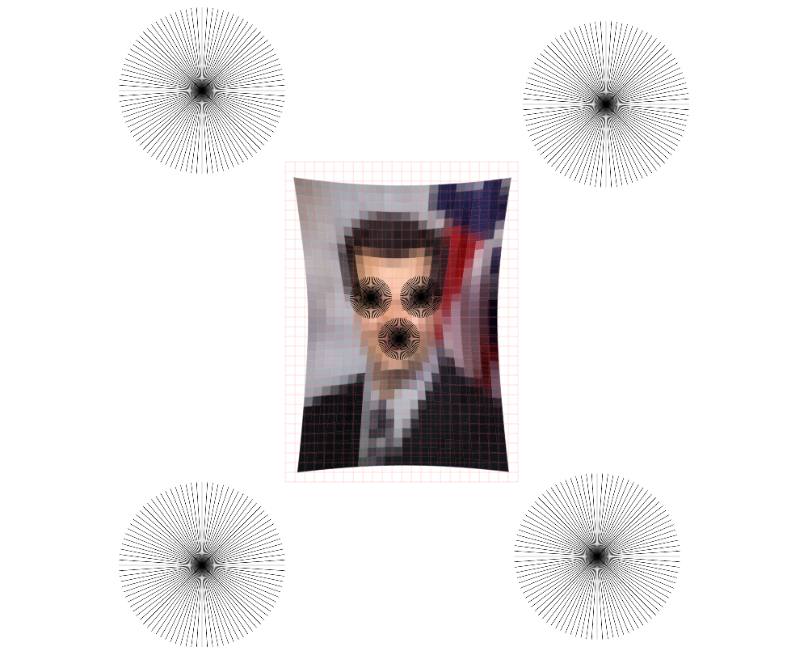
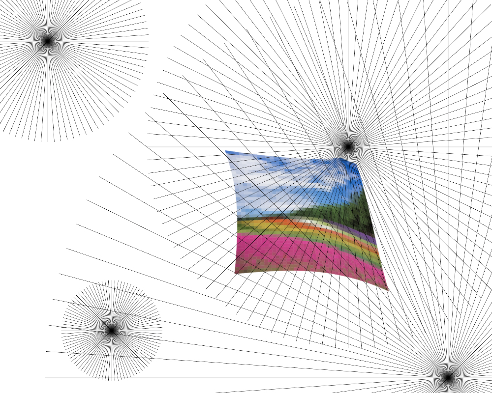
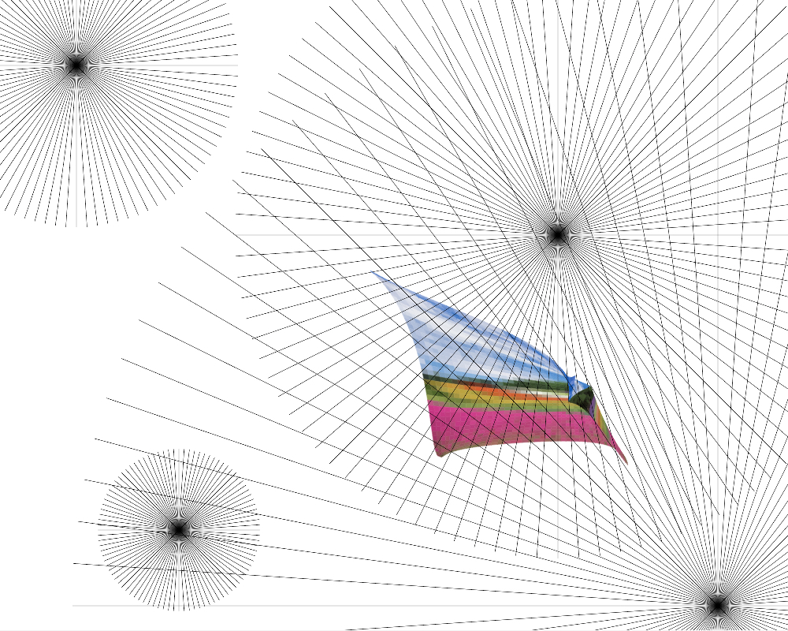

✕Taichi Aritomo /
Stretchy Grid
Grids are powerful, because they establish an initial state to which we can apply and measure changes.
Using p5.js and HTML Canvas, I built an interface for manipulating a regular grid with points of "force".




1. Sequential - Interpolating displacements

2. Simultaneous - Summing displacements
Technical Information
You can switch between two algorithms that simulate competing forces.The first algorithm applies the forces in order, making effects more predictable. The second algorithm applies the forces simultaneously, leading to unexpected results.
Open License images from NHK Creative Library and
Internet Archive.